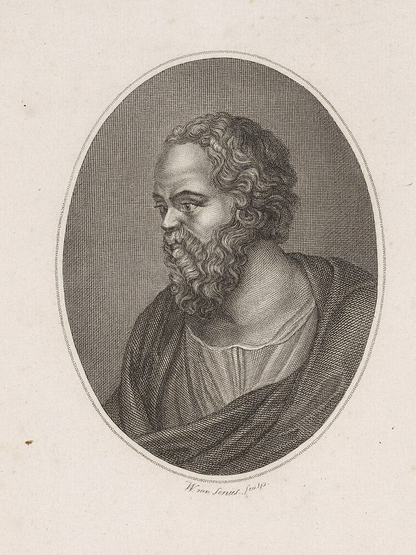
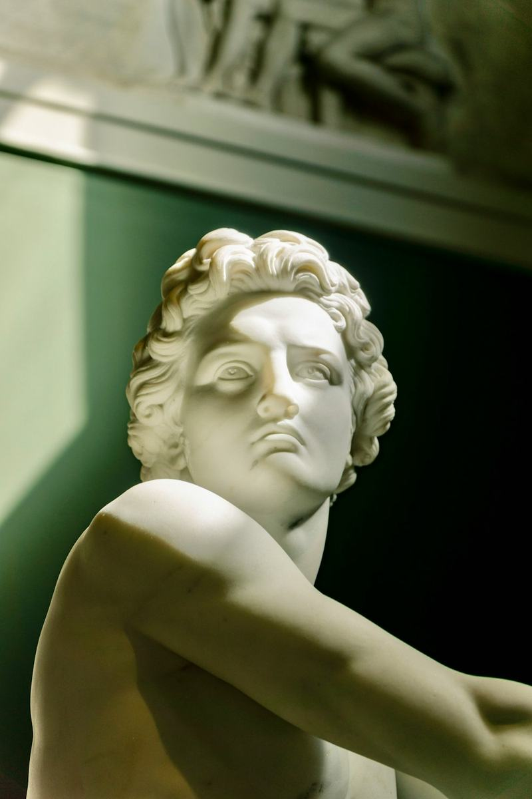
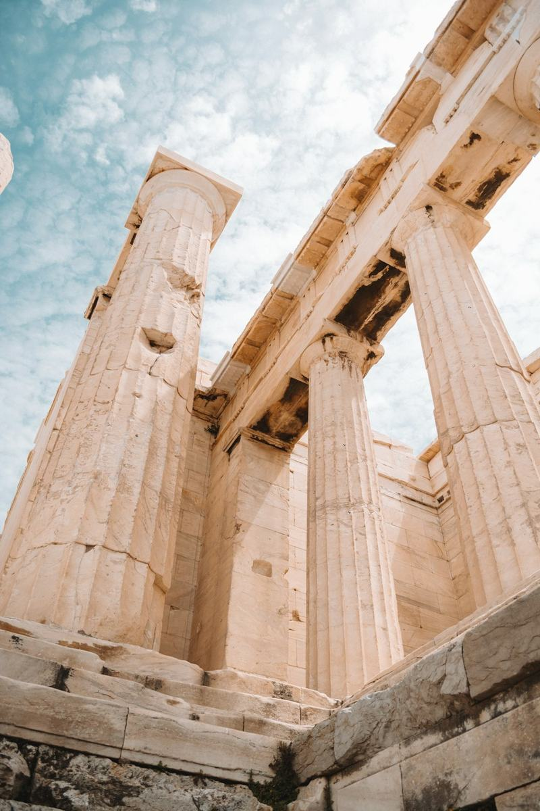
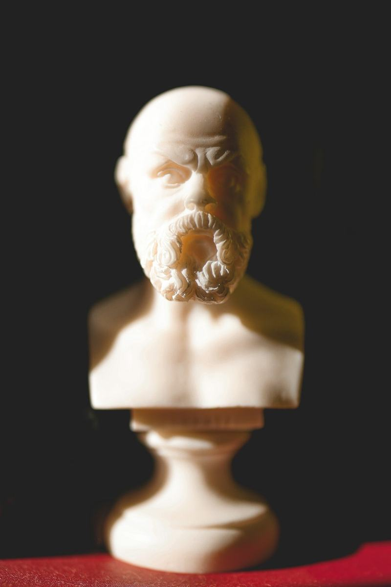
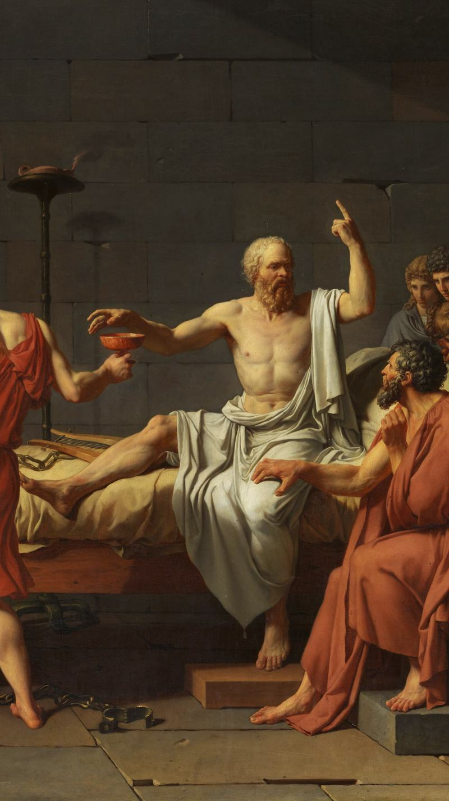

Reality Check · branding round 2 · from Leo's Socratic moodboard
Six Socratic directions
Each direction shows a splash screen and the result screen from the democracy session (felt 7 of 8, scored 5). The scales on every result screen are drawn from the real numbers: the "felt sure" pan sits lower because it weighs more, so the tilt is the calibration gap.
Shared meanings in every direction: ochre is always hints and Help, terracotta is always the overconfidence gap, and the olive wreath appears only for a part done with no help (an olive wreath was the prize at the ancient Olympics).
2AEngraving Light
The brain-and-scales collage from your board: an old copperplate engraving on parchment, with ochre suns behind it and printer's registration marks. Light, calm, and easy to read for a whole session.

Reality
Check
Learn to question what you think you know.
2BMarble & Gold
The bust with gold inscription from your board: veined marble ground, a statue framed in an arch, and letters spaced like a carved inscription. Quiet and premium. Gold is the main action color.

Reality
Check
Learn to question what you think you know.
2CChiaroscuro
The lit-statue shots from your board: Socrates out of the dark, with a beam of light. The most dramatic option, strong for the splash and the pitch. Light means insight, so the beam color is also Help.

Reality Check
Learn to question what you think you know.
2DFresco
The painted columns from your board: warm plaster, terracotta, a Greek key band, and a fresco blue for actions. The warmest and most Mediterranean option.

Reality Check
Learn to question what you think you know.
2ECollage
The modern take on the brain-and-scales collage: a cut-out bust, big ochre discs, halftone dots and a heavy condensed title. Feels like a poster, the most memorable at demo day, and the least like an education app.

Reality
Check
Learn to question what you think you know.
2FOld Master
The oil portraits from your board: deep umber, gilt frame lines, and David's The Death of Socrates (1787), where Socrates keeps teaching with his finger raised. Rich and serious, best for the pitch and onboarding.

Reality Check
Learn to question what you think you know.
Contrast check
WCAG 2 ratios for the text pairs each direction uses. The table fills in from the same token data that colors the screens.
| Direction | Text on ground | Soft text | Button | Hint | Gap on ground | Alone tag |
|---|
Image and icon credits
- Jacques-Louis David, The Death of Socrates, 1787, The Metropolitan Museum of Art (public domain, file via Wikimedia Commons).
- Portrait of Socrates, engraving, Rijksmuseum RP-P-1907-4885 (CC0).
- Unsplash (Unsplash License): Socrates bust in the Long Room by Jameson Berrios; Socrates bust by Andy Bodemer; marble statue by Xinyi Wen; the Acropolis by Alex Azabache; marble texture by H&CO; parchment texture by Divya M.
- Laurels and scales icons: game-icons.net by Lorc (CC BY 3.0). The scales on the result screens are drawn in code.
The AI-generated images on your moodboard aren't used: we can't tell who owns them. Every image here is licensed for use in the app and the pitch.